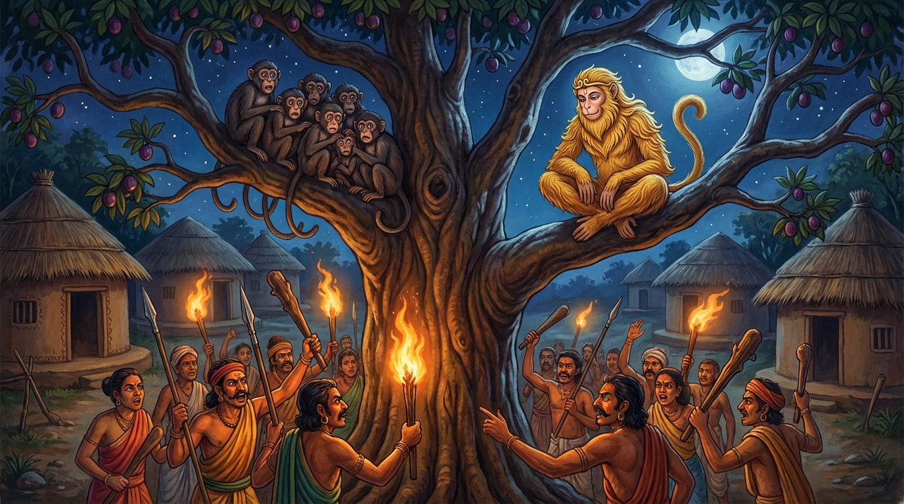

7. තින්දුක ජාතකය (177)
“ධනුහත්ථකලාපෙහි” (දුනු හා ඊතල මිටි අතින් ගත්) යන මේ දේශනාව බුදුරජාණන් වහන්සේ ජේතවනාරාමයේ වැඩ වෙසෙන සමයෙහි උන්වහන්සේගේ ප්රඥා පාරමිතාව අරබයා දේශනා කරන ලදී. බුදුරජාණන් වහන්සේ, “මහාබෝධි ජාතකයෙහි මෙන් ද උම්මග්ග ජාතකයෙහි මෙන් ද තථාගතයන් වහන්සේ ප්රඥාවෙන් හා උපායශීලීව ක්රියා කළේ දැන් පමණක් නොව පෙර ද එසේම ක්රියා කළ සේකැ” යි වදාරා අතීත කථාව ගෙනහැර දැක්වූ සේක.
අතීතයේ බරණැස් නුවර බ්රහ්මදත්ත රජු රාජ්ය කරන කල්හි, බෝධිසත්ත්වයන් වහන්සේ වඳුරු යෝනියෙහි ඉපිද අසූදහසක් වඳුරු පිරිසක් පිරිවරා හිමාල වනයෙහි වාසය කළ සේක. ඊට නුදුරින් එක් පිටිසර ගමක් විය. සමහර කලෙක එහි මිනිස්සු වසති, සමහර කලෙක නොවසති. ඒ ගම මැද අතුපතර විහිදුණු, මිහිරි ඵල ඇති එක් තිඹිරි ගසක් විය. මිනිසුන් නොවසන කාලයෙහි වඳුරු සමූහයා අවුත් එහි ගෙඩි අනුභව කරති. කල් යත්ම ඵල හටගන්නා ඊළඟ වාරයේදී ඒ ගම නැවත ජනාවාස විය. එය දැඩි ප්රාකාරවලින් වට කරන ලද්දේ දොරටු සහිත විය. ඒ ගස ද ඵල බරින් නැමුණු අතු ඇතිව තිබිණි. වඳුරු සමූහයා, “අපි පෙර අසවල් ගමෙහි තිඹිරි ගෙඩි කෑවෙමු. දැන් ඒ ගසේ ගෙඩි හටගෙන තිබේ ද? මිනිසුන් පදිංචි වී සිටිත් ද? නැද්ද?” යි සිතූහ. මෙසේ සිතා, “යව, ගොස් මේ තොරතුරු දැන එව”යි එක් වඳුරෙකු යැවූහ. ඒ වඳුරා ගොස් ගසේ ගෙඩි හටගෙන ඇති බවත්, ගමෙහි මිනිසුන් බහුලව වෙසෙන බවත් දැනගෙන අවුත් වඳුරන්ට දැන්වීය.
වඳුරෝ තිඹිරි ගෙඩි හටගෙන ඇති බව අසා, “මිහිරි තිඹිරි ගෙඩි කන්නෙමු”යි උනන්දු වී, බොහෝ වඳුරෝ වඳුරු රජුට ඒ බව දැන්වූහ. වඳුරු රජ තෙමේ “ගම ජනාවාස වී තිබේ ද? නැති ද?” යි විමසීය. “ස්වාමීනි, ජනාවාස වී ඇතැ”යි කී කල්හි, “එසේ නම් එහි නොයා යුතුයි. මිනිස්සු බොහෝ මායම් ඇත්තෝ ය” යි වඳුරු රජු කීය. “දේවයන් වහන්ස, මිනිසුන් නිදාගන්නා වේලාවේ, මධ්යම රාත්රියෙහි ගොස් කන්නෙමු”යි බොහෝ වඳුරෝ ගොස් වඳුරු රජු කැමති කරවාගෙන හිමාලයෙන් බැස, ඒ ගමට නුදුරින් වූ මහ ගල්තලාවක් මත නිදා, මිනිසුන් නින්දට යන වේලාව එනතුරු සිටියහ. මැදියම් රැයෙහි මිනිසුන් නින්දට ගිය කල්හි ගසට නැග ගෙඩි කෑහ. ඉක්බිති එක් පුරුෂයෙක් ශරීරකෘත්යය සඳහා ගෙයින් නික්ම ගම මැදට ගියේ වඳුරන් දැක මිනිසුන්ට දැන්වීය. බොහෝ මිනිස්සු දුනු හා ඊතල මිටි සූදානම් කරගෙන, නොයෙක් ආයුධ අතැතිව, ගල්කැට හා දඬුමුගුරු ආදිය රැගෙන, “රැය පහන් වූ විට වඳුරන් අල්ලා ගන්නෙමු”යි ගස වටකරගෙන සිටියහ. අසූදහසක් වඳුරෝ මිනිසුන් දැක මරණ බියෙන් තැතිගෙන, “වඳුරු රජු හැර අපට වෙනත් පිළිසරණක් නැතැ”යි නායකයා වෙත ගොස් පළමු වන ගාථාව පැවසූහ.

“දුනු හා ඊතල මිටි අතින් ගත් දුනුවායන් විසින් ද, උතුම් කඩු ගත් යෝධයන් විසින් ද හාත්පසින් අප වටකරනු ලැබ ඇත. මෙයින් මිදීමක් නම් කෙසේ වන්නේ ද?”
යනුවෙන් පළමු ගාථාව කීහ.
එහි ධනුහත්ථකලාපෙහි යනු දුනු හා ඊතල මිටි අතින් ගත් අය විසිනි; දුනු ද ඊතල හියවුරු ද ගෙන සිටියවුන් විසින් යන අර්ථයි. නෙත්තිංසවරධාරිභි යනු ‘නෙත්තිංස’ යනු කඩු ය; උතුම් කඩු දරන්නන් විසින් යන අර්ථයි. පරිකිණ්ණම්හා යනු පිරිවරා ගනු ලැබුවෙමු. කථං යනු කිසියම් උපායකින් අපට මොක්ඛො භවිස්සති (මිදීමක් වන්නේ ද?) යන්නයි.
ඔවුන්ගේ කථාව අසා වඳුරු රජ තෙමේ, “බිය නොවන්න! මිනිසුන්ට බොහෝ කටයුතු තිබේ. තවම මැදියම් රැය පවතී. අපව මරන්නෙමු යි වටකරගෙන සිටින මොවුන්ට, මේ ක්රියාවට බාධා වන අන්දමේ වෙනත් කටයුත්තක් මතු විය හැකියැ” යි සිතා වඳුරන් සනසා දෙවන ගාථාව කීවේය.
“බොහෝ වැඩකටයුතු ඇති අයට කිසියම් වෙනත් කාර්යයක් උපදින්නේ නම් මැනවි. තිඹිරි ගසෙහි ගෙඩි නොකැඩූ තැන් ඇත. (එබැවින්) තිඹිරි ගෙඩි කනු ලබාවා!”
යනුවෙන් දෙවන ගාථාව කීවේය.
එහි න යනු නිපාත මාත්රයකි. අප්පෙව බහුකිච්චානං යනු, බොහෝ වැඩ ඇති මිනිසුන්ට වෙනත් කොචි අත්ථො (කිසියම් කටයුත්තක්) උපදින්නේ නම් මැනවි යන මෙය මෙහි අර්ථයයි. අත්ථි රුක්ඛස්ස අච්ඡින්නං යනු මේ ගසේ ගෙඩි එහාට මෙහාට සෙලවීම් ආදියෙන් නොකඩන ලද බොහෝ තැන් ඇත. ඛජ්ජථඤ්ඤෙව තින්දුකං යනු තිඹිරි ගෙඩි කනු ලබාවා! තොපි ඇති තරම් ගෙඩි කවූ. පහර දෙන කාලය අපි දැන ගන්නෙමු.
මෙසේ මහාසත්ත්වයා වඳුරු සමූහයා සැනසුවේය. එපමණකින් හෝ අස්වැසිල්ලක් නොලබන ඒ සියලු දෙනාම පැලුණු හදවතින් මරණයට පත් වන්නාහ. බෝධිසත්ත්වයන් වහන්සේ මෙසේ වඳුරු සමූහයා සනසා, “සියලු වඳුරන් එක්රැස් වන්නැ” යි කීහ. එක්රැස් වෙමින් බලන විට ඔහුගේ බෑණා වන සේනක නම් වඳුරා නොදැක වඳුරු සමූහයා, “සේනක පැමිණ නැතැ”යි දැන්වූහ. “ඉදින් සේනක නොපැමිණියේ නම් තොපි බිය නොවව්. දැන් ඔහු තොපට යහපතක් (ආරක්ෂාවක්) සලසන්නේයැ” යි කීය. සේනක ද වඳුරු සමූහයා යන අවස්ථාවෙහි නිදාගෙන සිට, පසුව පිබිදී කිසිවෙකු නොදැක ඔවුන් ගිය මග ඔස්සේ එමින්, මිනිසුන් දැක, “වඳුරු සමූහයාට බියක් උපන්නේයැ” යි දැන ගත්තේය. හෙතෙම ගම කෙළවර පිහිටි එක් ගෙයක ගිනි දල්වාගෙන කපු කටින මහලු ස්ත්රියක සමීපයට ගොස්, (එතැනින් ගිනි ගෙන) කෙතක යන ගම් දරුවෙකු මෙන් එක් ගිනි පන්දමක් රැගෙන, සුළං හමන දිශාවට ගොස් ගමට ගිනි තැබුවේය. මිනිස්සු වඳුරන් අත්හැර ගිනි නිවීමට ගියහ. වඳුරෝ පලා යන විට සේනක වෙනුවෙන් ද එක් එක් ගෙඩිය බැගින් රැගෙනම පලා ගියහ.
බුදුරජාණන් වහන්සේ මේ ධර්ම දේශනාව ගෙනහැර දක්වා ජාතක කථාව නිමවා වදාළ සේක. “එකල බෑණා වූ සේනක නම් මහානාම ශාක්යයා විය. වඳුරු පිරිස බුදු පිරිස විය. වඳුරු රජ වූයේ මම ම වෙමි” යි වදාළ සේක.
හත්වන තින්දුක ජාතක වර්ණනාවයි.